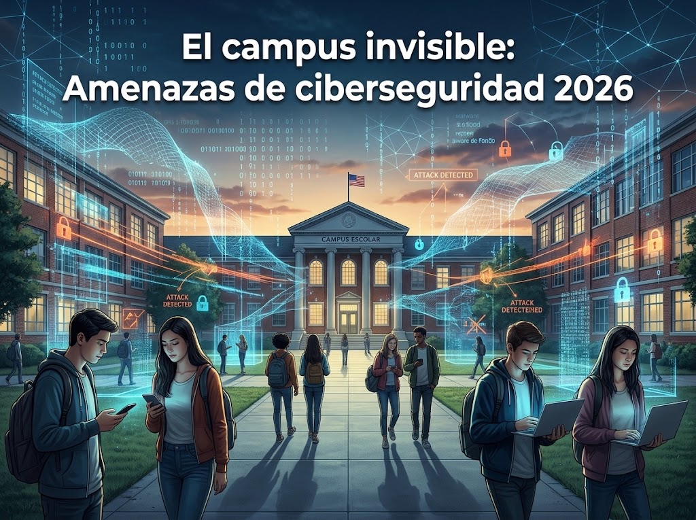
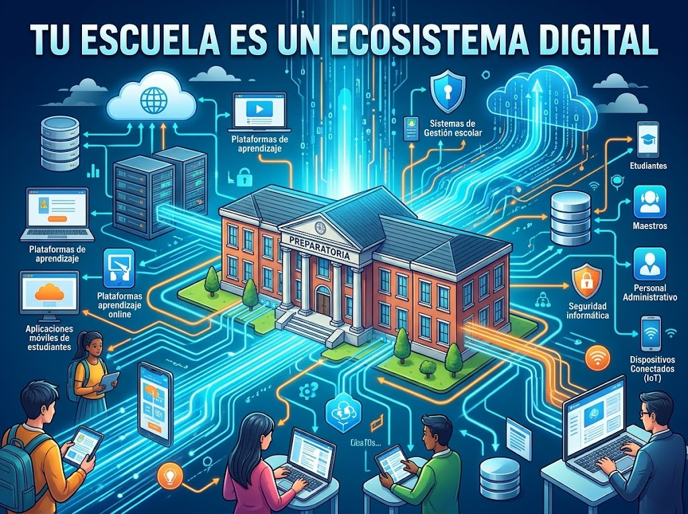
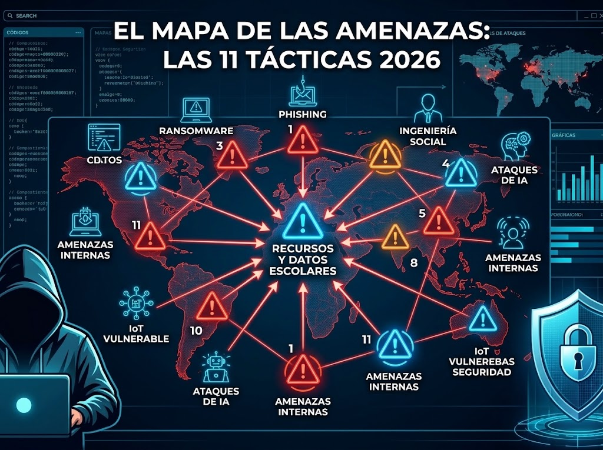
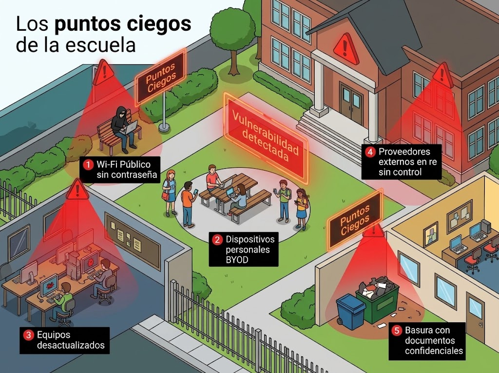
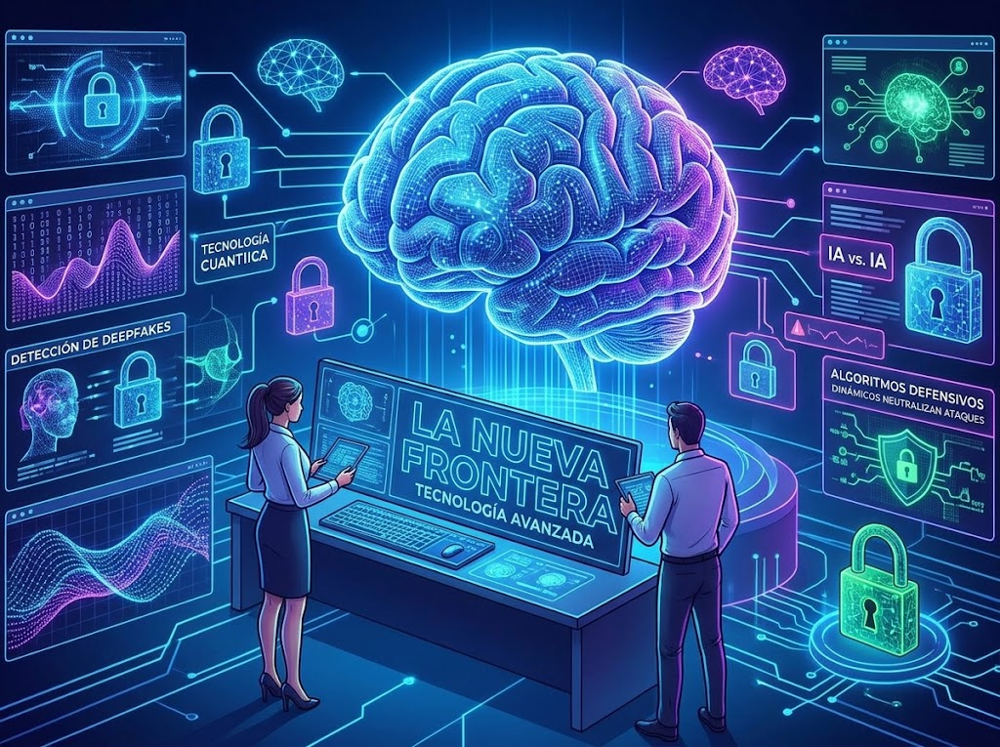
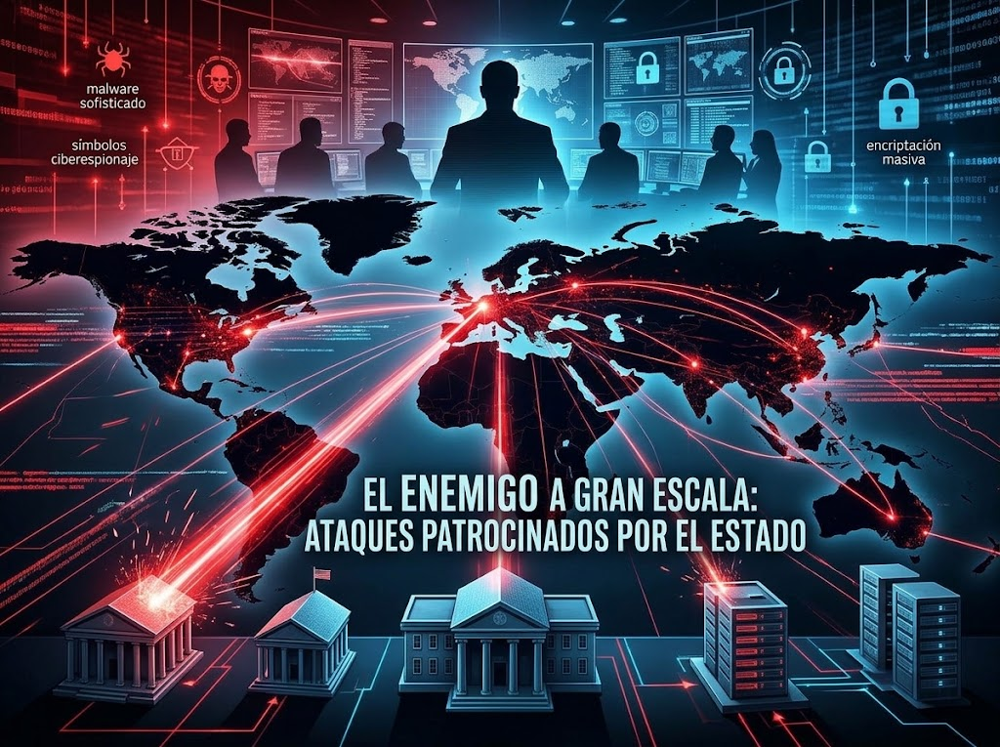
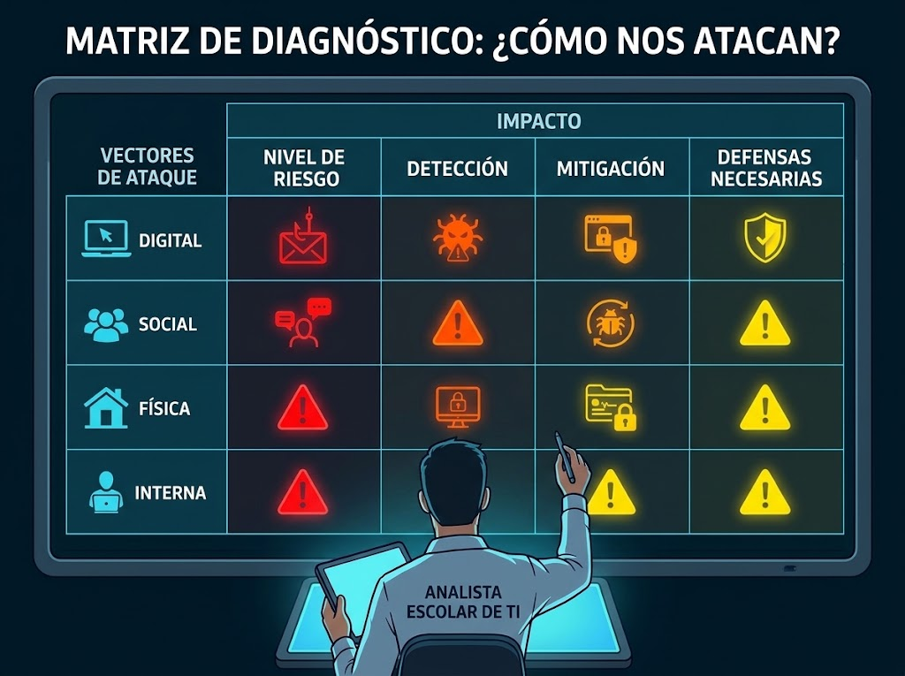
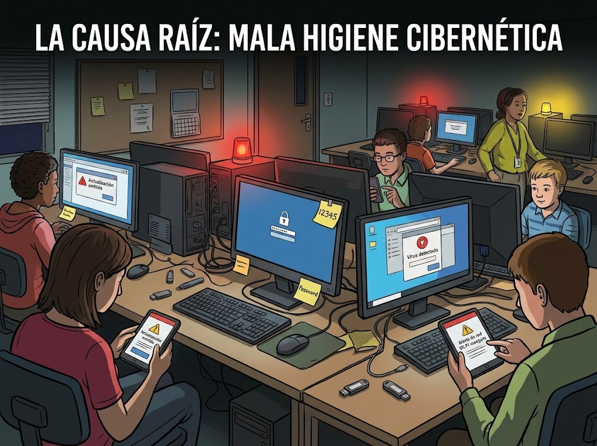
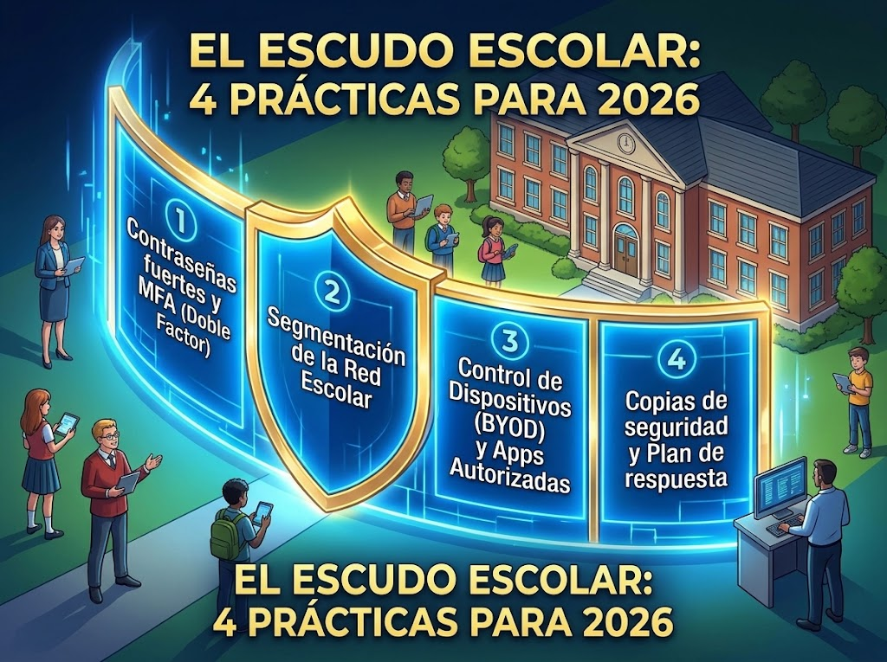
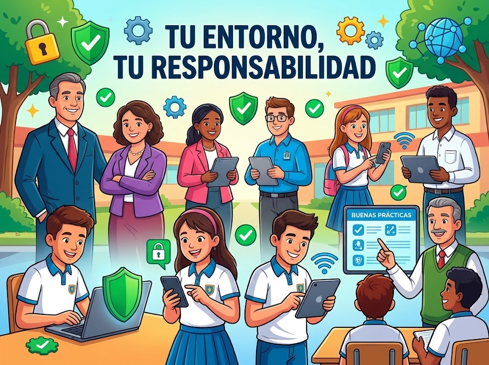

Evaluación de ataques automatizados por Inteligencia Artificial, tunelizadores DNS, ataques Drive-by, prevención de brechas internas y defensa proactiva en puntos finales.
Contestar CuestionarioUtiliza las flechas o desliza con el dedo/mouse para recorrer los 10 temas. Da clic para ir al tema.

El campus escolar ya no se limita a lo físico. Existe una compleja dimensión digital compuesta por redes Wi-Fi, móviles y la nube.

Aulas y pizarrones se transforman en ecosistemas hiperconectados con LMS, IoT y dispositivos BYOD.

Desglose del mapa de amenazas: factor humano, trampas en tareas, ransomware, IA maliciosa, túneles DNS y ataques de estado.

Zonas sin supervisión como Wi-Fi abierto, falta de control en BYOD y laboratorios desactualizados.

Tecnologías de última generación: inteligencia artificial, deepfakes y automatización de ataques.

Grupos cibernéticos avanzados con financiamiento masivo que buscan robo de información o acceso a redes.

Herramienta para clasificar y evaluar las distintas formas de ataque y su impacto en la escuela.

Descuidos diarios como usar contraseñas débiles, no actualizar e ignorar protocolos básicos.

Las 4 mejores prácticas indispensables para proteger el campus físico y virtual en 2026.

La protección del ecosistema digital es una responsabilidad compartida por toda la comunidad escolar.
Haz clic sobre cualquier imagen para verla en tamaño completo
El campus escolar ya no se limita a lo que se puede ver y tocar. Existe una compleja dimensión digital invisible, compuesta por redes Wi-Fi, dispositivos móviles, servidores y tráfico de datos en la nube, que funciona de manera ininterrumpida. Esta infraestructura, indispensable para el día a día, es también el escenario donde operan amenazas silenciosas que buscan explotar cualquier vulnerabilidad.
Este tema nos enseña a reconocer que, aunque no veamos los datos en el aire, cada conexión, correo y descarga de un estudiante o docente en el plantel forma parte de un entorno digital expuesto a riesgos reales como la intercepción de información o el acceso no autorizado. Entender el "campus invisible" es el primer paso para aprender a protegerlo.
Las escuelas han dejado de ser solo aulas y pizarrones para transformarse en verdaderos ecosistemas digitales hiperconectados. En este entorno interactúan plataformas de aprendizaje (LMS), sistemas de gestión escolar, bases de datos con información sensible, redes de internet de las cosas (IoT), y un sinfín de dispositivos personales de alumnos y profesores (BYOD) que extienden las fronteras de la institución hacia la nube.
Esta complejidad significa que un problema en un punto de la red —como un dispositivo de un estudiante infectado en casa— puede comprometer el sistema completo de la escuela. Por ello, debemos comprender que la seguridad escolar ya no consiste en ponerle llave a una puerta, sino en resguardar un tejido tecnológico vivo, donde cada usuario y sistema conectado influye en la seguridad de los demás.
Para defender el campus, debemos entender dónde se esconden las trampas. Todas las amenazas modernas se agrupan en tres áreas críticas de nuestra vida escolar:
Ingeniería Social:
Amenazas Internas:
Acción de origen: Clic en "Resumen de Historia Gratis PDF"
Caballos de Troya:
Ataques desde un Vehículo en Movimiento (Drive-by):
Ransomware: Malware que manipula los datos del usuario, los encripta y los vuelve inaccesibles a cambio de un rescate financiero elevado (logrado tras un profundo reconocimiento de la red).
El Impacto Escolar:
Inteligencia Artificial Maliciosa:
Túnel DNS:
El Concepto: Agencias cibernéticas o Estados nación altamente sofisticados buscando robar infraestructura crítica, datos gubernamentales o espionaje por motivos políticos o económicos.
La Conexión Escolar: Aunque es más común en universidades con investigación avanzada, las preparatorias públicas son blancos para el robo masivo de identidades a nivel nacional, sirviendo como puentes hacia redes gubernamentales más grandes.
Todas las escuelas tienen "puntos ciegos" de ciberseguridad: aquellas zonas de la infraestructura física o digital que quedan fuera de la supervisión constante y que los atacantes aprovechan con facilidad. Estos incluyen el uso de redes Wi-Fi públicas sin contraseñas, la falta de control sobre los dispositivos personales de los alumnos (BYOD), equipos de cómputo desactualizados en laboratorios, e incluso basura con documentos confidenciales o proveedores externos que acceden a los sistemas de la escuela sin un control riguroso.
Identificar estos vacíos nos ayuda a darnos cuenta de que la seguridad es tan fuerte como su eslabón más débil. Al arrojar luz sobre los puntos ciegos, la comunidad educativa puede aplicar medidas correctivas, cerrar brechas imprevistas y evitar que un descuido en un rincón olvidado de la red se convierta en la puerta de entrada para un desastre digital.
Bienvenidos a la nueva frontera de la seguridad informática, donde la batalla se libra con tecnologías de última generación. Los ciberataques de 2026 utilizan inteligencia artificial, deepfakes, automatización y algoritmos avanzados para burlar las defensas tradicionales en cuestión de milisegundos, desafiando por completo la velocidad de reacción de los seres humanos.
Para combatir estas amenazas de última generación, los defensores de la escuela también deben valerse de tecnología avanzada: inteligencia artificial defensiva que detecta anomalías en tiempo real, autenticación de vanguardia y sistemas de encriptación cuántica. Este tema nos prepara para comprender que la ciberseguridad es una constante evolución científica y nos enseña a utilizar estas herramientas inteligentes como nuestros mejores aliados.
Inteligencia Artificial Maliciosa:
Túnel DNS:
No todos los atacantes son aficionados o estafadores comunes; existen grupos cibernéticos masivos con un financiamiento casi ilimitado y una sofisticación técnica alarmante: los ataques patrocinados por Estados o agencias gubernamentales. Aunque parezca que una escuela no es de su interés, estos grupos suelen atacar el sector educativo para robar propiedad intelectual, investigaciones científicas, o bien, para usar las redes escolares como un "trampolín" hacia infraestructuras críticas del gobierno o grandes corporaciones.
Este tema nos abre los ojos ante la magnitud de la guerra cibernética global. Nos enseña que la seguridad de nuestra institución no es un asunto menor ni aislado, sino que formamos parte de un panorama geopolítico donde un nivel alto de protección es indispensable para blindar la información colectiva de la sociedad frente a espionaje y sabotaje internacional.
Para defenderse con eficacia, primero hay que entender con precisión el método del adversario. La matriz de diagnóstico es una herramienta de análisis que nos permite clasificar y evaluar las distintas formas de ataque (digitales, sociales, físicas e internas) frente a su impacto en la escuela, identificando el nivel de riesgo, la rapidez de detección, los procesos de mitigación y las defensas urgentes para contenerlos.
Utilizar esta matriz nos ayuda a dejar de ver la ciberseguridad como algo abstracto y nos permite verla como un problema estructurado. Con este diagnóstico, el personal de TI y los líderes escolares pueden priorizar esfuerzos, entender qué áreas necesitan mayor presupuesto o atención y tomar decisiones basadas en datos reales para evitar que las amenazas se traduzcan en incidentes de seguridad.
Detrás de la inmensa mayoría de los ciberataques exitosos no hay un virus avanzado ni un plan de espionaje de película, sino una causa mucho más común y evitable: la mala higiene cibernética. Esto se refiere al descuido diario de las normas básicas de seguridad, como usar contraseñas débiles o repetidas, dejar post-its con claves pegados en monitores, ignorar las actualizaciones del sistema, conectar USBs desconocidos o conectarse a redes Wi-Fi públicas sin protección.
Este tema busca concientizarnos sobre el impacto que tienen nuestras pequeñas acciones cotidianas. Así como nos lavamos las manos para prevenir enfermedades físicas, practicar una buena higiene cibernética diaria —como usar autenticación de doble factor y actualizar nuestros equipos— es el escudo más simple y efectivo para evitar que un hacker de paso explote un descuido y paralice nuestra escuela.
El Escudo Escolar reúne las 4 mejores prácticas indispensables para proteger a una comunidad educativa frente a los riesgos del 2026. Estas prácticas son: 1) Políticas de contraseñas fuertes y MFA (Doble Factor) para verificar identidades, 2) Segmentación de la Red para que un dispositivo infectado no contagie todo el plantel, 3) Control estricto de dispositivos BYOD y aplicaciones no autorizadas, y 4) Rutinas de copias de seguridad de datos con un Plan de respuesta en caso de incidentes.
Implementar estas 4 prácticas es como levantar una muralla digital de alta resistencia alrededor del campus físico y virtual. En lugar de vivir con el miedo de ser atacados, el Escudo Escolar nos ofrece un marco preventivo y de resiliencia, de modo que si un ataque llega, la escuela tenga las herramientas y la preparación para contenerlo de inmediato y seguir operando sin contratiempos.
Para cerrar esta travesía, recordamos la verdad más grande de la ciberseguridad: la protección de nuestro ecosistema digital no es tarea exclusiva de un software, un ingeniero o del director; es una responsabilidad compartida que recae en cada estudiante, docente, padre de familia y administrativo que interactúa con la escuela.
Cada vez que elegimos no compartir una contraseña, reportamos un correo sospechoso de phishing, o actualizamos un dispositivo, estamos aportando un ladrillo a la defensa colectiva. Al comprender que nuestro entorno es nuestra responsabilidad, pasamos de ser espectadores vulnerables a defensores activos, asegurando que la escuela siga siendo un espacio seguro, confiable y libre para el aprendizaje y el crecimiento de todos.
Pon a prueba tus conocimientos sobre Ciberseguridad Escolar aprendidos en esta unidad.
Has completado la autoevaluación.